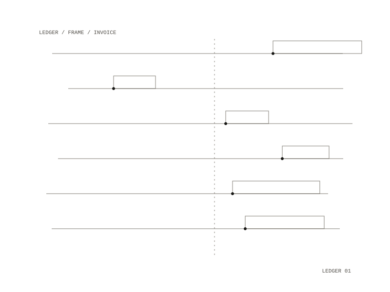

Work Harness
A back office for time-and-materials work done through a coding assistant. It keeps a time ledger, backed by evidence, that keeps the consultant's time apart from the agent's time, and two assistant commands turn the same evidence into client documents with every line cited.

Two clocks
Agent time is a turn of the session minus the spans where the agent was waiting for the consultant and any long stretch with nothing recorded, such as a sleeping machine. Consultant time is the gap before each of their actions, up to a cap; where sessions overlap, attention is split and never counted twice. Calls, which never appear in a transcript, are logged by hand, and a logged call takes its time whole. The two clocks are never added into one number, and the ledger is append-only.
The review screen
The screen opens on one engagement's week laid out like a photographer's contact sheet. Each day has a two-staff strip, consultant time above and agent time below on one time axis, and a frame for each session or call. Each frame shows its times, the minutes on both clocks, the opening prompt or call note, and a milestone and one-line description proposed by a model that has read the activity's evidence. The consultant goes through the week by keyboard: a number sets the milestone, x marks a frame not billable, e edits the line and space shows the evidence, and every key has a button. Two agreeing marks on one project folder become a rule, applied before the model is asked again. The marked week becomes the draft invoice, with each line's evidence and agent time on its own lines.
The citation gate
The model never states a figure: hours, amounts and status come from code, and a proposed line that states a figure is refused. Before a status report or recap can go to a client, a gate fails it when:
- a claim has no citation to a session, call, logged entry, commit or document
- a citation points at another engagement's work, a cancelled call, or a turn that does not exist
- a figure does not appear in the week's evidence pack
A document that passes is rendered as a client copy, with each citation turned into a numbered source the client can read.
Kept apart
Engagements are sealed from each other, and client data never enters git or a container image. The containers have no network, read transcripts read-only, and write only to the ledger and output folders; the commit hook refuses those folders.
Docker on your own machine; the review screen is served on localhost only
timesheets, CSV, draft invoices, status reports and meeting recaps